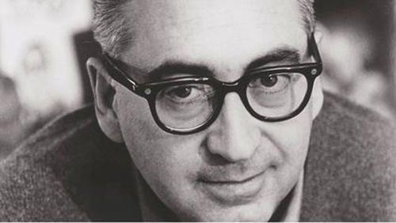
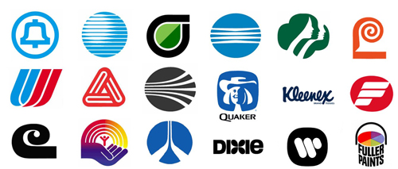
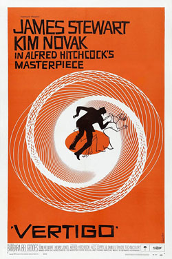
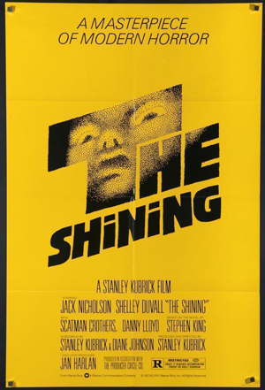

Saul Bass
Did Saul Bass revolutionize design in film?
Saul Bass is an internationally recognised designer both in graphic design and in the film industry. Bass did a lot of famous work and left his stylistic mark, but did Saul Bass revolutionize design in film?
Background
Saul Bass was an American graphic designer and Oscar winning filmmaker, born on May 8th, 1920 in New York City that would then go onto introduce a new art form to the world using movie title sequence. Even at a young age Bass was apparently highly creative and drew constantly. Bass attended the Arts Student League in New York once he had finished high school, after he then took night classes at Brooklyn College, where he had the chance to study under György Kepes, a famous designer and master of the Bauhaus style. In the 1940'2 Bass left New York to move to Los Angles. While there he worked as a graphic designer in advertising until 1954 when he got a job offer from filmmaker Otto Preminger to design a poster for the film "Carmen Jones". The poster that Bass created was so loved by Preminger, that Bass was also asked to create the title sequence for the film as well. With this new opportunity Bass realised the potential that was present and that he could create something great that set the correct atmosphere and theme for the film. In an interview Bass said that he had felt that “audience involvement with a film should begin with its first frame”(Bass, no date). Whereas before Bass's input, title cards were static and dull, they had seen as being unimportant, so no attention was paid to them. By 1958 Bass was one of the most famous graphic designers in the world. He worked with various filmmakers such as Alfred Hitchcock, Stanley Kubrick, Otto Preminger, Billy Wilder, and Martin Scorsese creating film posters and title sequences for many movies, some of which are classics in today's world. Even though Saul Bass is mainly known for his work in the film industry, he designed a great deal of other things such as album covers, ceramic tiles, logos, buildings and service stations. A book about his work called Saul Bass: A Life in Film and Design was released 15 years after his passing in 1996.
Logos
The logos that Saul Bass was created would averagely last 34 years, but some are still present in today’s world and are yet to be replaced by the company they were made for. Bass once even quoted that logo design should “Symbolise and Summarise”(no date, Bass), following this point of view Bass was able to create logos that capture the essence of the company and that represents it in the best was possible. For example the AT & T logo is simplistic as it is just a blue circle with white lines but when you take a closer look it almost resembles a globe/emblem which is the perfect way to symbolise how AT & Y is a global mobile network company.
Vertigo
A film by Alfred Hitchcock, Vertigo was another movie that Saul Bass did design work for. Bass offered Hitchcock a package deal which would consist of many different iterations of the designs for the film The Vertigo poster design was established with only three colours (orange, black and white) and the hand-cut lettering against the bright orange background. Bass also used close up images of the two main actors from the film for some of his designs. Bass’s work appears abstract but still lets the viewer know what the film is about, he can say a lot through the poster without overloading it, that is a skill that can take years to master. “Design is thinking made visual.” (Bass, no date) is something that Bass has shown throughout his work. Bass’s creative process for Vertigo shows us that inspiration can come anywhere as while in a book store one day, he was fascinated by the spiralling images in a book., he then began to experiment and try to replicate the spirals. “I made a batch. Sat on them for years” (Bass, no date), Bass once said, and then once he got asked to work on Vertigo he finally knew how to put the spirals use. This goes to show how anything can lead to something great, “making the ordinary extraordinary”as Bass said
The Shining
Bass also created the poster for one of the most iconic horror movies The Shining. It is apparently rumoured that Bass sketched out 300 different versions of what the poster could be, of which the director Stanley Kubrick would give him plenty of feedback on. The final design uses the stippling effect that creates an image and a black background. A lot of the rejected designs remain unseen to today.Conclusion
In conclusion Saul Bass did revolutionize design in the film industry. He made it what it is today and showed us what was possible. Bass took something that was ignored by everyone and gave it new life and because of that design in the movie industry has been changed forever What he did is best summed up in this final quote from him “I want to make beautiful things, even if nobody cares.”(Bass, no date)